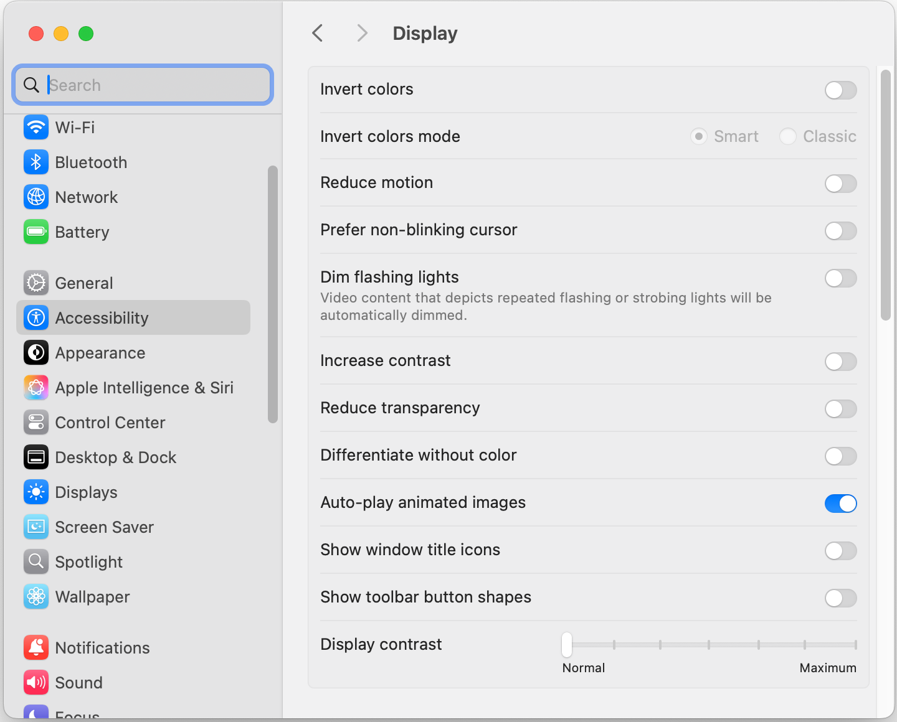
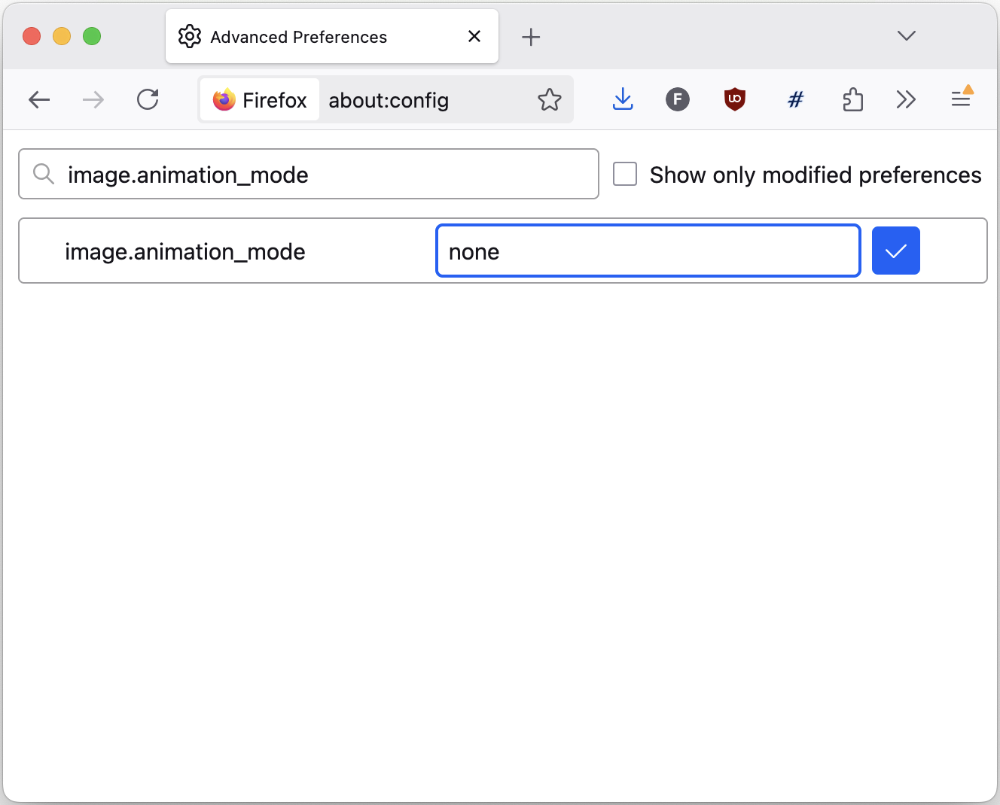

Control Over Image Animation
Control Over Image Animation
Animated Images
- Animated GIFs
- APNG
- WebP
- …
- They are everywhere, and here to stay
Emoticons
People still use GIFs‽
More than ever.
Decorative Images
New Game
Rich Text Editing
Drag&drop inserts <img> tags
Dear AC forum,
What do you think of this as a new logo:
Problem for Users
- WCAG SC 2.2.2 violation: vestibular motion sensitivity, attention deficits
- General preference/annoyance


Problem for Authors
Accomodate user needs/preferences
- Tailor adaptation to different uses of images
-
Different contexts:
new content,
old content,
user-generated content,
extensions…
Evidence of author interest:
Workarounds
Server-side
- Server-side frame extraction, then swapping out
- Server-side conversion to MP4, then using
<video>
- Computationally expensive
Client-side
- Client-side frame extraction via
<canvas>, then swapping out
Idea: image-animation property
image-animation: normal | paused | running
Inherited, so you can do:
@media (prefers-reduced-motion) {
:root {
image-animation: paused;
}
}
Applies to:
- Content images (
<img>, <image> etc)
- CSS images (any
<image> value)
Toggling playback
@media (prefers-reduced-motion) {
:root {
image-animation: paused;
}
img:focus, img:hover {
image-animation: running;
}
}
Focusability to be managed separately

What authors want

Idea: Images in <video>
<video src="meme.gif" controls loop muted></video>
Explainer, WHATWG issue
- No new API surface
- Full playback control (user-facing UI, disabling loop, disabling autoplay, speed, etc)
- Extensibility built-in
- Initial reactions encouraging
- Need to switch element
- Can't respond to media queries (except with CAS)
What about the opposite?
<img src="meme.gif" controls noloop noautoplay>
+ making HTMLImageElement implement HTMLMediaElement
Idea: High-level solution
image-animation: controlled;
- Content images: UA-generated playback controls & automatic focusability
- CSS images: same as
paused
- UA-generated UI (customizable with pseudo-elements)
- tricky interaction with
<img controls> if we ever decide to do it
Idea: Low-level solution
-
img::overlay pseudo-element to paint controls (or any other affordance)
-
img:static pseudo-class to exclude static images
-
Animation triggers for playback control
- Primitives useful more broadly
- Compatible with future
<img controls>
- Simple things not easy
- Can make inaccessible interaction
image-frame() function
image-frame(<image> [at <percentage> | last-shown]?)
- Straightforward to implement
- Automatically upgrades all
<image> values
- Can be granular
- More elaborate control over playback tricky
- Needs handshake with calling code
animation-* in @image
WG resolution for @image in 2022
@image --pause-if-reduced-motion {
@media (prefers-reduced-motion) {
animation-play-state: paused;
}
}
.foo {
background-image: image(url(foo.gif) --pause-if-reduced-motion)
}
- No new API surface
- Existing animation machinery for free
- Dependency on a much larger feature
- Needs handshake with calling code
Special animation-name value
animation-name: image-animation(content), image-animation(background-image);
animation-play-state: paused;
- Weird
- No help with list-valued properties
- Awkward when combined with regular animations
- Needs explicit opt-in for every image-containing value